User manual
This guide covers everything you need to work with ShellCat day to day. New users can read sections 1–3 and then jump to the features they need.
1. Getting started
After installing (see the installation guide), start ShellCat. The window has three areas:
- Sidebar (left) — your groups and saved connections, a search box, and the settings gear at the bottom.
- Header and tab bar — buttons for Teleport, Local terminal, Scripts and the Command palette, plus one tab per open session.
- Workspace — the selected tab, with the Terminal / Files / Monitor / Tunnels switcher above it.

Your first steps:
- Click New connection (or + in the tab bar).
- Fill in the server details and save.
- Click the server in the sidebar to connect.
2. Connections
Use + next to the sidebar title to add a connection or a group. Hover over an item and click ••• for more actions: connect, browse files, monitor & diagnose, open with tsh ssh (Teleport servers), edit, duplicate and delete.
| Field | Description |
|---|---|
| Name | How the server appears in the sidebar and tabs. |
| Host / Port | Hostname or IP address and SSH port (default 22). For Teleport servers the host is the node name. |
| Username | The Unix account to log in as (your login for Teleport). |
| Group, colour, tags | Organise servers. Tags are searchable from the sidebar. |
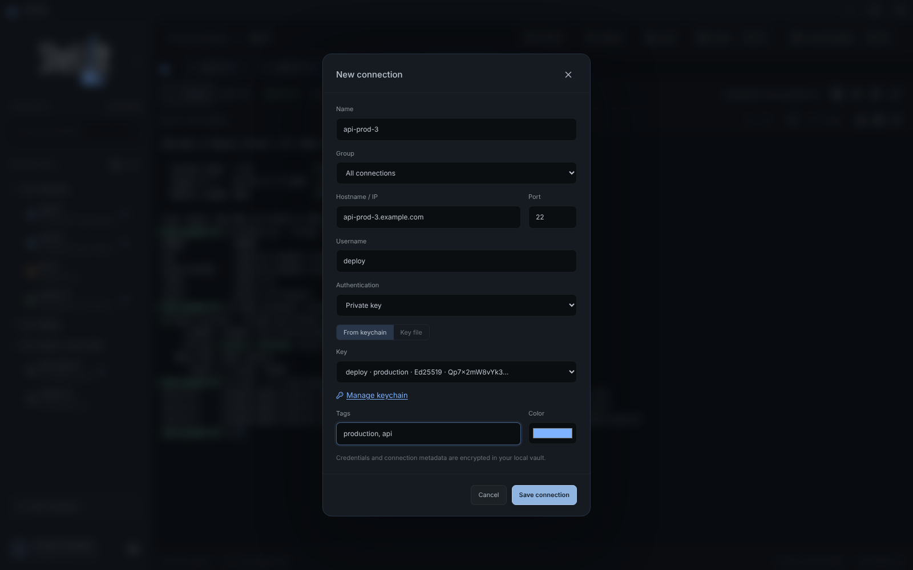
Authentication types
- Password — stored encrypted. When editing, leave the field empty to keep the saved password or type a new one to replace it. Switching to another authentication type removes the saved password.
- Private key — choose From keychain to pick a key you added to the keychain (see below), or Key file for the path to a key file (OpenSSH format, e.g.
~/.ssh/id_ed25519) and an optional passphrase. Leave the passphrase empty to keep the saved one, or tick Remove saved passphrase. - SSH agent — uses keys loaded into your agent. On Windows enable the OpenSSH Authentication Agent service and run
ssh-add; on Linux ShellCat usesSSH_AUTH_SOCK. Nothing secret is stored. - Teleport — uses the certificate from
tsh login. Enter the proxy address (and optionally the cluster). The easiest way to add these is from the Teleport panel (section 11).
Keychain
Click Keychain in the header to manage your SSH private keys in one place. Keys are stored encrypted in your vault, and the private key is never shown again after you add it.
- Add a key — choose a key file, paste a key, or generate a new Ed25519 or RSA 4096 key. If the key has a passphrase, enter it once; ShellCat stores it with the key so connecting never asks for it.
- Each key shows its type and fingerprint and which connections use it. Use the buttons to copy the public key (for the server's
~/.ssh/authorized_keys), rename it, export the private key or delete it. ShellCat warns you before deleting a key that connections still use. - In a connection's settings, choose Private key → From keychain and pick the key. Manage keychain opens this panel.
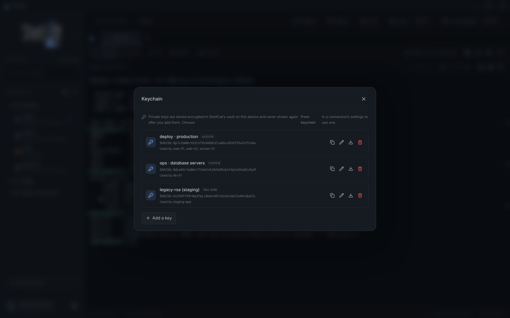
Host keys
The first time you connect to a server, ShellCat shows its fingerprint. Compare it with a trusted source and click Trust host & connect. If a known server's key changes later, ShellCat stops and shows the previous and the new fingerprint — this can indicate a man-in-the-middle attack or a reinstalled server. Only if you are sure the change is legitimate, type the server's name to confirm and click Replace key & connect. Teleport servers are verified automatically against your cluster's host certificate authority.
3. Terminal and tabs
- Each connection opens in its own tab. Open the same server twice for two independent shells.
- Split the workspace side by side or top and bottom with the split buttons on the right of the tool bar, or drag a tab to the side of the workspace.
- Full screen — press F11 or the full-screen button to hide the sidebar and header. A compact bar at the top keeps your tabs, the Terminal, Files, Git, Monitor and Tunnels views and the split buttons; press F11 again to leave. Ctrl+Shift+B collapses the sidebar to a narrow rail.
- The terminal tool bar offers find, font size, clear, the command palette and reconnect.
- Select text to copy it; right-click for Copy and Paste. Links and file paths in the output can be opened with a click.
- If the network drops, ShellCat detects it within about a minute and shows Reconnect.
- Closing ShellCat while sessions, transfers or unsaved files are open asks you to confirm first.
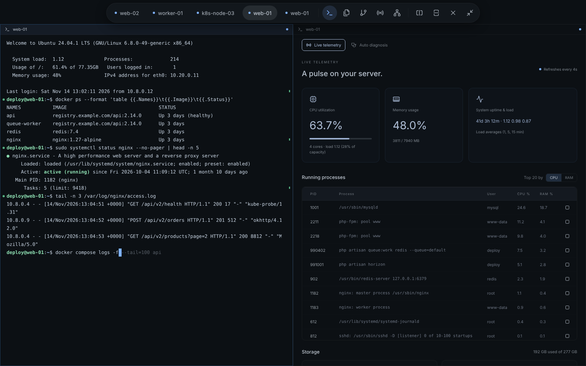
Autocomplete and shell integration
While you type at the prompt, the rest of a likely command appears in gray after the cursor. Suggestions come from your history on that server (commands you ran in ShellCat, newest first), the built-in command catalogue, and file and folder names for the word you are typing. Press → to accept the whole suggestion or Ctrl+→ for one word. Tab is still your shell's own completion.

Autocomplete needs shell integration, which ShellCat sets up for bash and zsh when a session starts. It also marks every command with its exit status (green for success, red for failure), lets Ctrl+↑ and Ctrl+↓ jump between commands, makes relative paths clickable and lets the Git tab follow your terminal's folder. Right-click the terminal to turn autocomplete, command hints or shell integration on or off, or to clear the remembered commands for that server.
4. Command palette
Press Ctrl+Shift+P. Type a few words describing what you want (for example docker logs or disk usage) and pick a command with the arrow keys and Enter.
- Commands with placeholders such as
<container>ask you to fill them in; values are quoted safely. - Commands are pasted for review into the active terminal — they only run when you press Enter there.
- Colour dots show the safety label: read-only, caution or danger.
- New command saves your own commands; Browse all lists the full catalogue; tick commands and Export to share a pack, or Import pack to load one.
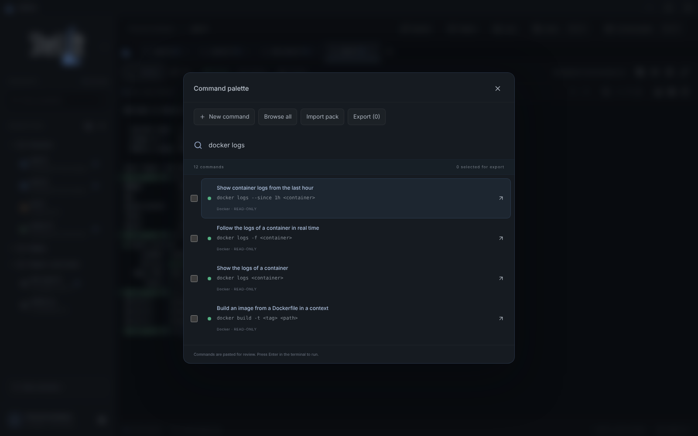
5. Script palette
Press Ctrl+Shift+S or click Scripts. Scripts are complete, multi-line programs you can run again and again — for example flushing firewall rules or restarting a group of workers.
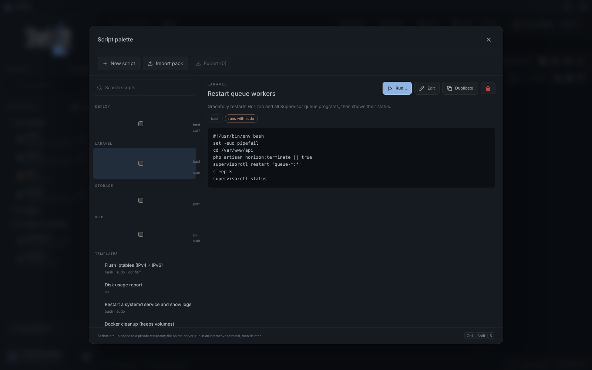
Creating a script
- Click New script, or select a template and click Duplicate.
- Give it a name and category, choose the interpreter (
bash,sh,python3,perl,node, or auto to use the script's#!line). - Optionally set default arguments (available as
$1,$2…), Run with sudo, and Ask for confirmation for risky scripts. - Write the script in the editor (Tab indents, Ctrl+S saves) and click Save script.
Running a script
- Connect to one or more servers first.
- Select the script and click Run… (or double-click it).
- Tick the target servers, adjust the arguments and choose a mode:
- New terminal tab (recommended) — a dedicated interactive session per server. Password prompts,
readquestions and Ctrl+C work, and the tab shows the exit status when the script finishes. - Current terminal — types the run command into the server's open shell, so the script shares its working directory and environment.
- New terminal tab (recommended) — a dedicated interactive session per server. Password prompts,
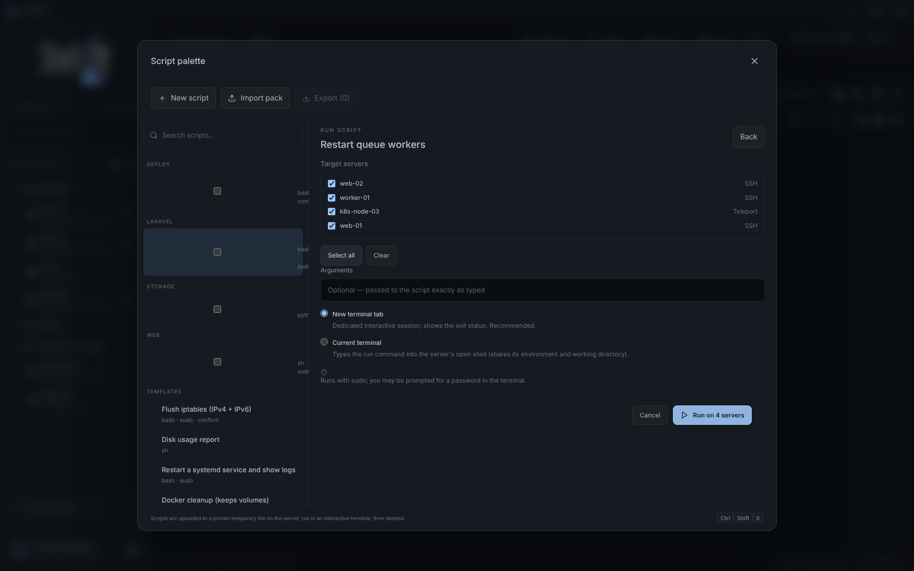
Behind the scenes ShellCat streams the script into a private temporary file on the server (readable only by you), runs it, and deletes it when it ends. Windows line endings are converted automatically. Use Run without saving in the editor to test changes.
Sharing: tick scripts and click Export to create a pack file; teammates use Import pack, review every script, and confirm. Importing never runs anything.
6. Files (SFTP)
Switch a connected tab to Files.
- Type a path in the path bar; Tab completes directory names, Enter opens the folder.
- Upload and download with the tool bar buttons; progress and speed appear in the transfer queue, and transfers can be cancelled.
- Create files and folders, rename, change permissions and delete.
- Open a small text file to edit it: Ctrl+F find, Ctrl+H replace, Ctrl+S save. Saving writes to a temporary file first and then replaces the original.
- Prefer your own editor? Add VS Code, Notepad++ or any other program in Settings → Editors and use Open with on a file. ShellCat downloads a private copy, opens it in that editor and uploads it again each time you save.
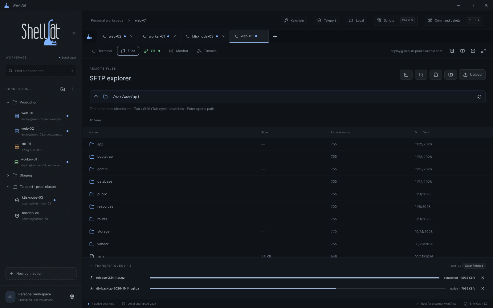
If a server refuses SFTP, ShellCat explains why and offers Use sftp-server for this session, which starts the server's own sftp-server program over SSH. Only use it where your organisation allows file transfer.
7. Git
The Git tab is a visual Source Control view for repositories on the server. It runs the server's own git (version 1.8 or newer) over your SSH connection; nothing is installed on the server.

Opening a repository
The Git tab follows the folder open in Files: open any folder inside a repository there, then switch to Git. You can also type a path in the bar at the top; Follow Files switches back. Recently used repositories are offered when a folder is not a repository. The view refreshes by itself every few seconds and when you return to ShellCat.
Cloning a repository
When the folder is not a repository, the Git tab offers Clone a repository and Initialize a repository here. Enter the HTTPS or SSH address, the folder to clone into and, if you like, a different folder name. Under Options you can clone a single branch or tag, only the latest commit (much faster for big repositories) or include submodules. For HTTPS addresses, Sign in with picks the saved Git account for that host; SSH addresses use the SSH keys on the server.
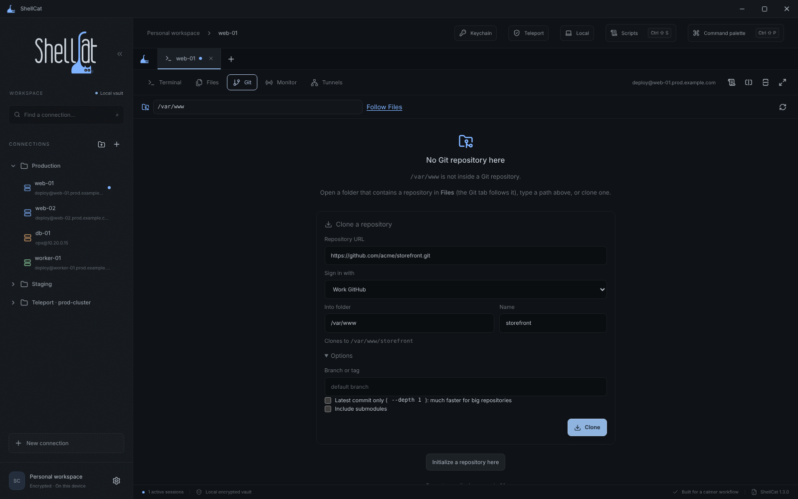
Changes and commits
- Files are grouped into Merge Changes, Staged Changes, Changes and Stashes, each marked with a letter (M modified, A added, D deleted, R renamed, U untracked, ! conflict). Hover a file for Open file, Discard and Stage/Unstage; right-click for more, including Add to .gitignore.
- Click a file to see its diff, side by side or inline. Stage hunk, Unstage hunk and Discard hunk act on one block. Click changed lines (Shift-click for a range) to stage, unstage or discard only those lines.
- Write a message and press Commit or Ctrl+Enter. If nothing is staged, ShellCat offers to commit all changes. The ▾ menu adds Commit (Amend), Commit & Push and Commit & Sync.
- If the server has no Git name and email yet, ShellCat asks for them on the first commit and can save them for the repository, for your user, or for that commit only.
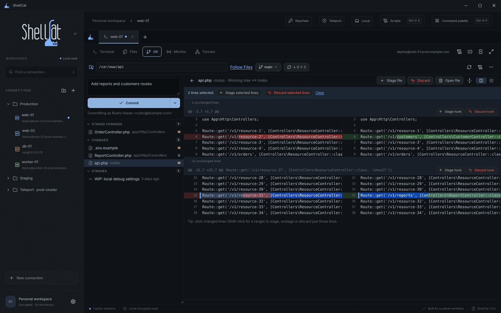
Branches, sync and history
- Click the branch name to check out a branch, remote branch or tag, or to create a branch. If local changes would be overwritten, ShellCat offers to stash them first.
- The sync button shows commits to pull (↓) and push (↑) and runs pull then push; for a new branch it becomes Publish Branch. Long network operations show progress and can be cancelled.
- The … menu contains every other action: pull (merge or rebase), push (including force with lease), fetch, undo last commit, stage/unstage/discard all, merge, rebase, rename and delete branches, remotes, stashes and tags, and the Git output log of every command ShellCat ran.
- The Graph shows your history with coloured branch lanes, branch and tag labels and authors; switch between Current and All branches. Click a commit to list its files and open their diffs. Right-click a commit to check it out, create a branch or tag there, cherry-pick, revert or reset; right-click a label to check out, merge, rebase onto or delete it.
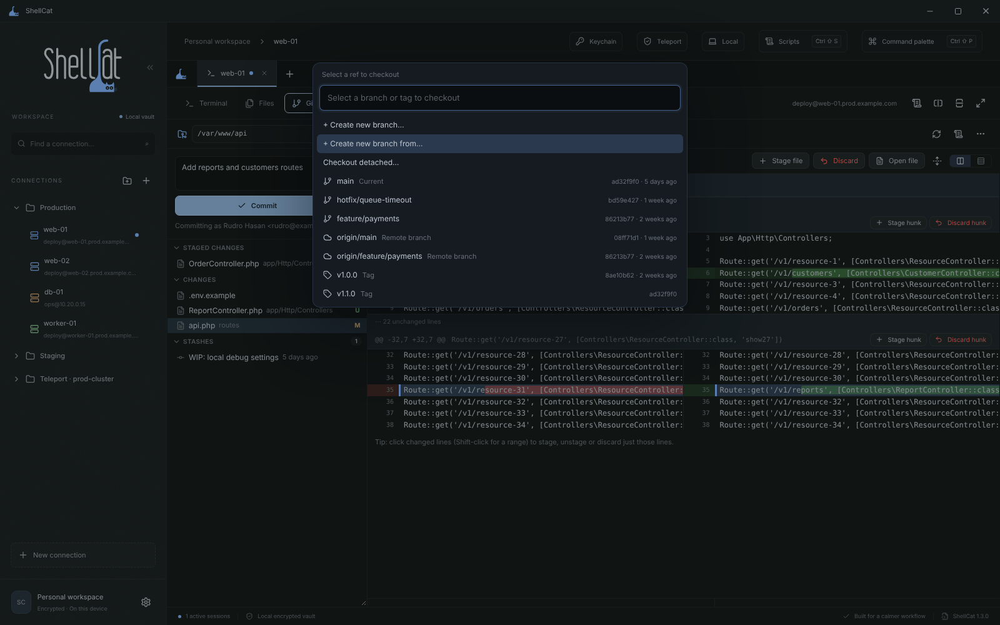
Merge conflicts
When a merge, rebase, cherry-pick or revert stops on conflicts, a banner shows the operation with Continue, Skip (where it applies) and Abort. Conflicted files appear under Merge Changes; click one to resolve each conflict with Accept Current, Accept Incoming or Accept Both, then Save & mark resolved. You can also take one side for the whole file or edit it by hand.
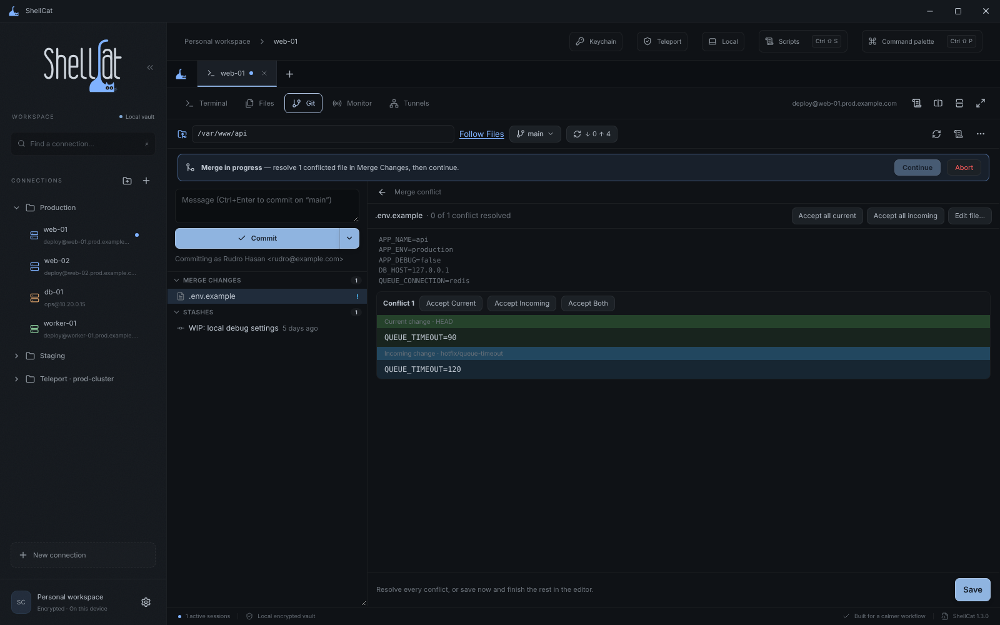
Git accounts and authentication
For HTTPS repositories, add your accounts once in Settings → Git: choose GitHub, GitLab, Bitbucket or another host, and enter a personal access token (an app password on Bitbucket). You can also set the commit name and email to use in repositories you clone with the account. The token is stored encrypted in your vault and passed to Git only for the command that needs it; it is never saved on the server or shown in its process list. Each repository remembers which account it uses for fetch, pull and push.
Without an account, push, pull and fetch use the server's own credentials — a deploy key, an SSH key or a credential helper on the server. ShellCat cannot answer password or host-key prompts; if Git needs one, it stops with an explanation. Run the same command once in the terminal, or set up a key on the server.
8. Monitor
Switch to Monitor → Live telemetry to see CPU, memory, uptime and load averages, the top 20 processes by CPU, and listening ports. The view refreshes every four seconds while it is visible. Click ■ next to a process to send it SIGTERM (after confirmation).
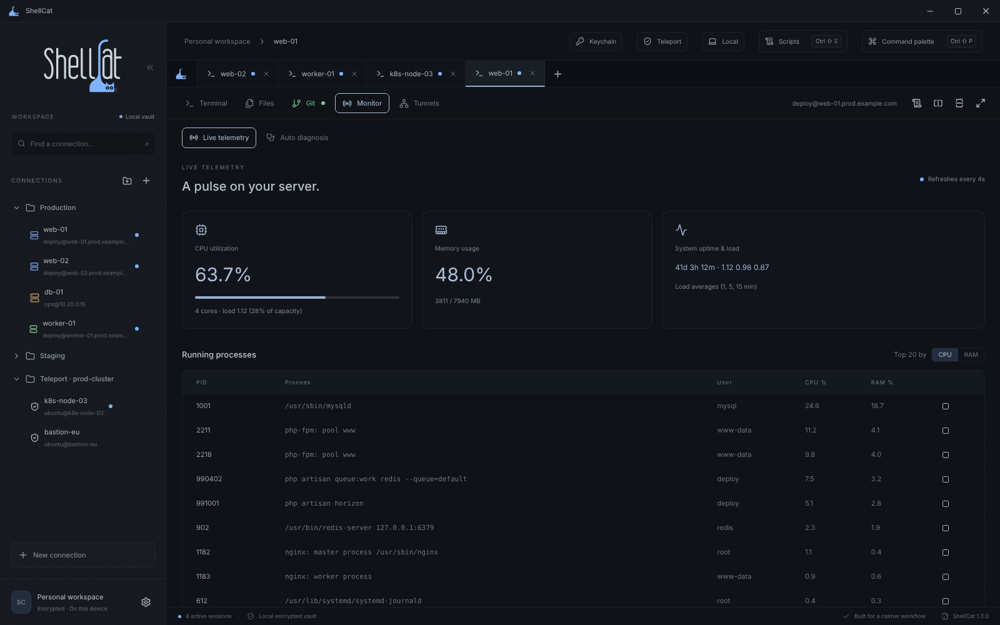
9. Auto diagnosis
Open Monitor → Auto diagnosis and click Run diagnosis. ShellCat runs a fixed set of 67 read-only probes and builds a report. A run usually takes 10–60 seconds; you can switch tabs while it runs or cancel it.
What is collected
| Area | Examples |
|---|---|
| System | OS, kernel, uptime and load, clock sync, CPU, memory and swap, pressure stalls, kernel limits |
| Storage | Disk and inode usage, block devices, mounts, I/O, large logs, deleted-but-open files |
| Network | Addresses, routes, DNS, listening ports, connection states, firewall rules |
| Processes & services | Top processes, zombies, failed and restarting systemd units, timers, cron, journal and kernel errors, OOM kills |
| Web | Nginx, Apache and HAProxy status, configuration and config tests, error logs, TLS certificate expiry |
| Containers | Docker engine, containers, restart counts, health, resource use, logs of failing containers, Podman, Kubernetes |
| Workers | Supervisor programs and config, queue/worker processes, PM2 |
| Environment & security | Environment variables (redacted), .env keys (values omitted), runtimes, databases, sshd settings, fail2ban, pending updates |
Safety and privacy
- Nothing is changed on the server. Commands that need root use
sudo -nonly if passwordless sudo is configured — ShellCat never prompts for a password here. - Each probe has a time limit, so a hung command cannot block the run.
- With Redact secrets enabled (default), passwords, tokens, API keys, connection strings, private keys and similar values are replaced with
<redacted>. Always review a report before sharing it.
Reading and sharing the report
- Findings lists problems detected automatically (for example a full disk, a failing Nginx config test or a restart-looping container), most severe first. Click a finding to jump to its evidence.
- Raw data shows each probe's command, exit status and output, with a filter.
- Edit JSON / Edit Markdown let you add notes or remove sections before sharing.
- Copy for AI copies the Markdown version, which starts with instructions for an AI assistant; paste it into your AI tool of choice. Save JSON and Save Markdown write files.

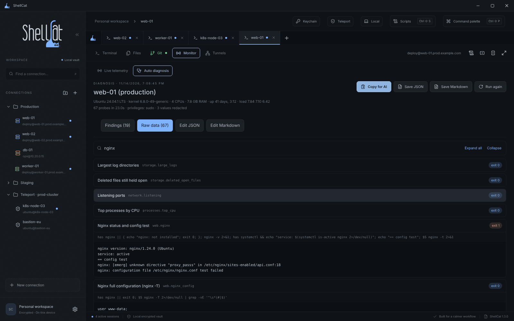
10. Tunnels
Switch to Tunnels and click Add tunnel.
- Local → remote: listens on your computer (127.0.0.1) and forwards to a host and port reachable from the server — for example a database on the server's private network.
- Remote → local: listens on the server's loopback and forwards back to a host and port reachable from your computer.
Click Start to activate a tunnel and Active to stop it. Tunnels close when their connection closes.
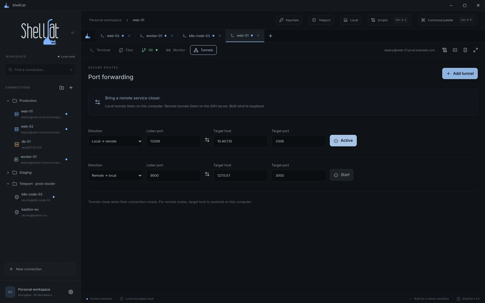
11. Teleport
ShellCat works with your installed Teleport tsh client. Open the panel with Teleport in the header or Ctrl+Shift+E.
Logging in
- On the Account tab, enter your proxy address (e.g.
teleport.example.com:443) and optionally your user name, auth connector and cluster. - Click Log in with tsh. A terminal tab opens running
tsh login: complete SSO in your browser or answer the password, OTP or security-key prompts there. - Return to the Teleport panel and press refresh. Your profile shows its roles, allowed logins and expiry.
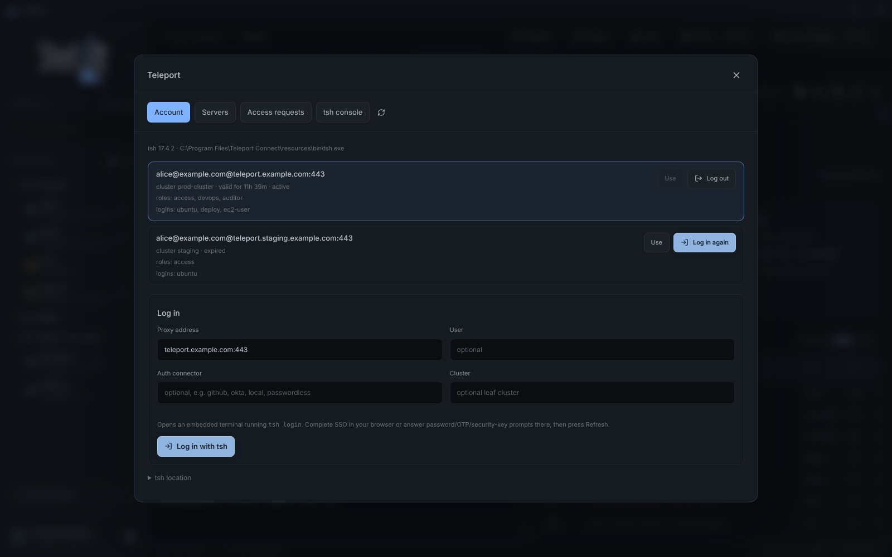
If ShellCat cannot find tsh, set its location under tsh location on the Account tab.
Finding and opening servers
- On Servers, choose the cluster and the login (Unix user) to use. Search by name or address, or filter by label with
key=value(click a label chip to add it). - Connect opens the server with all ShellCat features (Files, Monitor, Diagnosis, Tunnels, Scripts).
- The terminal icon opens it with
tsh sshin an embedded terminal. - The bookmark icon saves it to the sidebar in a group named Teleport · <cluster>.
- Tick several servers to Connect selected or Save selected in one go (up to 20 at once).
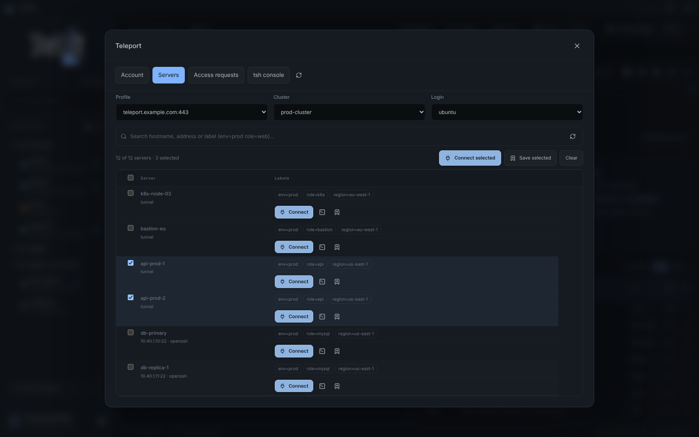
Automatic fallbacks
- If the chosen login is not allowed on a server, ShellCat tries your other allowed logins, connects with the first that works, tells you, and updates the saved server.
- If ShellCat's own connection is refused entirely (typically because the server requires per-session MFA), the tab is reopened with
tsh sshautomatically and a banner explains why. Files, Monitor and Scripts are not available in such tabs; Retry ShellCat connection tries again.
Access requests
On Access requests, enter roles and/or resource IDs and a reason, then Submit request; a terminal shows the request while it waits for approval. Approved requests have an Assume button that logs you in with the elevated access.
tsh console
Run any other tsh command — db ls, kube ls, apps ls, recordings ls and so on — in an embedded terminal. The current proxy is added automatically.
12. Local terminal
Click Local in the header to open a terminal on your own computer (PowerShell on Windows, your login shell on Linux). Use it next to your server tabs, for example to run tsh, git or kubectl.
13. Settings and appearance
Open Settings with the gear at the bottom of the sidebar.
- Appearance — pick one of six built-in themes: Night, Daylight, Paper, Ember, Phosphor or High Contrast. Every theme meets WCAG AA contrast, and High Contrast meets AAA. Applying a theme keeps your terminal font size, line height, scrollback and cursor setting, and saves your previous appearance as
appearance.previous.json. Under Customize, Edit appearance opens your personalappearance.json(colours, fonts and terminal settings); save it and click Reload appearance. Remove a value to return to the default. - Editors — the editors offered by Open with in Files, and which one opens files by default. Editors found on your computer are listed for one-click adding.
- Git — your Git accounts for HTTPS repositories (see section 7).
- Command model — optionally download a small local model for smarter command search. It runs entirely on your computer.
- About — version and the location of diagnostic logs.
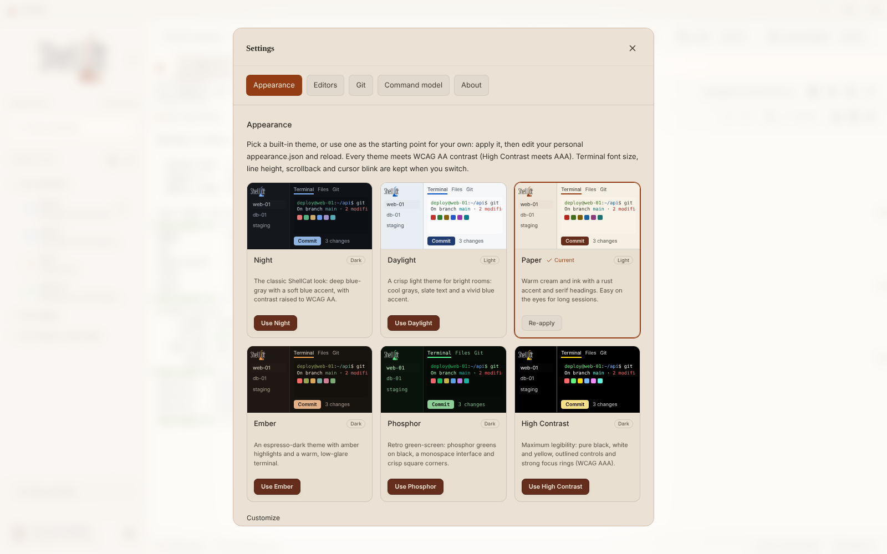
14. Data, backup and security
ShellCat stores everything locally:
| Platform | Folder |
|---|---|
| Windows | %APPDATA%\ShellCat |
| Linux | ~/.config/ShellCat |
| File | Contents |
|---|---|
vault.sqlite3 | Your connections, keychain keys and Git account tokens, encrypted with AES-256-GCM |
key.bin | The vault key. On Windows it is protected with DPAPI and only works for your Windows account on this PC. On Linux it is protected with your desktop keyring (for example GNOME Keyring or KWallet) when one is available. |
known_hosts | Trusted server host keys |
commands.json, scripts.json | Your personal commands and scripts (plain text — do not store secrets in scripts) |
settings.json, appearance.json | Preferences |
logs/ | Diagnostic logs (no passwords or command output) |
key.bin together with vault.sqlite3. Without the matching key the vault cannot be decrypted. Because the Windows key is bound to your account, copying the folder to another PC or user will not open the vault; export scripts and command packs to move them, and re-create connections on the new machine.Security notes: passwords and passphrases never leave the ShellCat background process; host keys are verified on every connection; only one ShellCat window runs at a time to protect the vault.
15. Keyboard shortcuts
| Shortcut | Action |
|---|---|
| Ctrl+Shift+P | Command palette |
| Ctrl+Shift+S | Script palette |
| Ctrl+Shift+E | Teleport panel |
| F11 | Full screen (zen mode) on and off |
| Ctrl+Shift+B | Collapse or expand the sidebar |
| → / Ctrl+→ | Accept the autocomplete suggestion / one word of it |
| Ctrl+↑ / Ctrl+↓ | Jump to the previous / next command in the terminal |
| Esc | Close the current dialog |
| ↑ ↓ Enter | Choose a command in the palette |
| Ctrl+S | Save (script editor, file editor) |
| Ctrl+F / Ctrl+H | Find / replace in the file editor |
| Tab / Shift+Tab | Complete paths in Files; indent in editors |
| Ctrl+Enter | Commit in the Git tab |
| Ctrl+F | Search files by name or contents in Files |
16. Troubleshooting
“Authentication failed”
Check the user name and password or key. For keys, make sure the passphrase is saved and the key is in OpenSSH format. For SSH agent, confirm ssh-add -l lists your key.
“Cannot reach the server”
Check the host, port, VPN and firewall. Try ssh user@host -p port from a terminal to compare.
“Host key has changed”
Do not continue until you have confirmed the server was legitimately reinstalled or re-keyed. Then type the server's name in the warning and click Replace key & connect (see Host keys).
Teleport: “not logged in” or “expired”
Your certificate has expired. Log in again from the Teleport panel.
Teleport: “access denied to <login>”
Your roles do not allow that Unix login on the server. Choose another login in the Servers tab; the profile on the Account tab lists your allowed logins.
Files: “The server refused the SFTP subsystem”
See section 6. On Teleport, file copying may be disabled for your role.
Git: “Git does not trust this folder”
The repository belongs to another user (for example www-data), and Git refuses to work in it. Click Trust this folder for my user, which runs git config --global --add safe.directory for that folder on the server.
Git: push or pull asks for a password
For HTTPS repositories, add a Git account with a personal access token in Settings → Git and choose it for the repository. Otherwise ShellCat cannot type passwords or accept host keys for Git: run the command once in the terminal, or set up an SSH key or credential helper on the server (see section 7).
Linux: blank window, missing icons or slow typing
Install the WebKitGTK package for your distribution (see the installation guide). If your graphics driver still has trouble, start ShellCat with SHELLCAT_GPU=off shellcat to turn off GPU acceleration.
ShellCat shows “started with problems”
A banner names the component that failed. Logs are in the logs folder (see section 14). If the vault key cannot be read, restore key.bin from a backup — ShellCat never replaces an existing key.
Still stuck? Open an issue and attach the relevant lines from the log file (they contain no passwords).